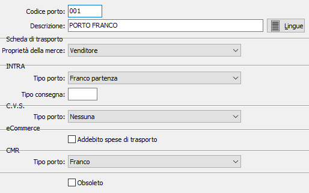

Porti
La tabella, che può essere attivata dagli utenti che utilizzano le procedure Vendite e Ordini, consente di creare le descrizioni di "porto" che vengono inserite nei documenti. A ciascun codice, su tre caratteri alfanumerici, corrisponde la descrizione di una modalità di porto (come "porto franco", "porto assegnato", ecc.).
Se l'utente non ha interesse a questa prestazione, può omettere sia la creazione della tabella, sia l'inserimento dei relativi codici nell'anagrafica di clienti o fornitori.

CODICE PORTO: codice alfanumerico di 3 caratteri per individuare il Porto in esame. Sul campo sono attive le funzioni di ricerca (F9) sulla tabella Porti.
DESCRIZIONE: campo alfanumerico di 50 caratteri per descrivere il Porto in esame.
LINGUA: bottone che attiva la tabella di memorizzazione della descrizione del Porto in esame nelle varie lingue utilizzate dall’utente
proprietà della merce: specificare il proprietario della merce da proporre sulle schede di trasporto. Il campo può assumere i valori “Venditore”, “Compratore” o “Altro”; nel caso in cui sia impostato quest’ultimo valore i dati del proprietario della merce dovranno essere compilati direttamente sulla scheda generata.
TIPO PORTO INTRA: combo box per definire il tipo di porto ai fini della compilazione dei modelli Intra, Valori ammessi: Franco partenza; Franco destino.
TIPO CONSEGNA INTRA: campo numerico per definire il tipo di consegna da riportare sui modelli Intra.
TIPO PORTO C.V.S.: combo box per definire il tipo di porto ai fini dei trasporti internazionali. Valori ammessi: Nessuno; C.I.F.; F.O.B.;
ADDEBITO SPESE DI TRASPORTO: attivo solo in presenza del modulo eCommerce; definisce se per il porto attivo dovranno essere addebitate sull'ordine web le spese di trasporto.
TIPO PORTO: attivo solo se attiva la gestione del documento CMR; definisce la tipologia del porto da riportare nel documento.
OBSOLETO: flag attivabile dall’utente per inibire il possibile utilizzo dell’elemento di tabella in esame nelle successive transazioni.